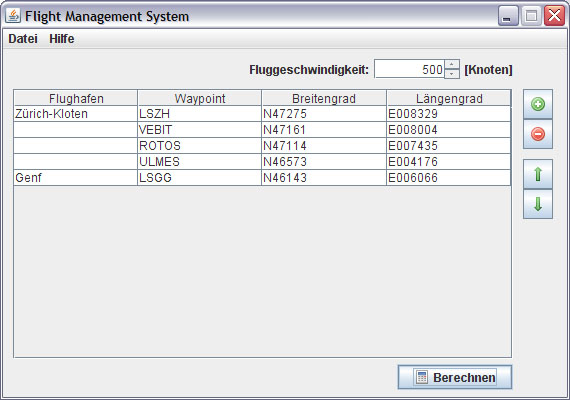
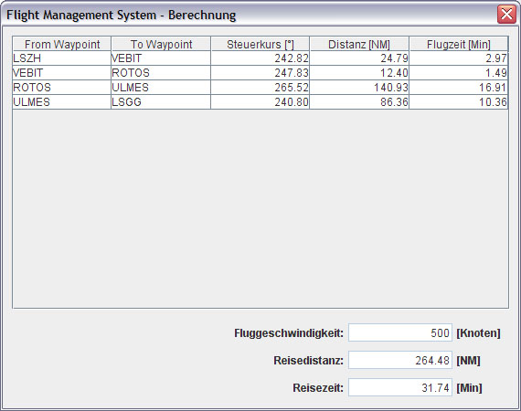

Waypoint eingeben
Fluggeschwindigkeit eingeben
Waypoint löschen
Tabelle Sortieren
Berechnung
Daten speichern / öffnen
Daten importieren / exportieren
Ausgabe Routenabschnitte (Leg)
Ausgabe Gesamte Route

Waypoint eingeben: Klicken Sie dazu auf das + Symbol. Es wird eine neue Zeile in die Tabelle eingefügt. Schreiben Sie folgende Daten in die Tabelle
Fluggeschwindigkeit eingeben: geben Sie hier die gewünschte Fluggeschwindigkeit ein
Waypoint löschen: Markieren Sie den zu löschen gewünschten Waypoint und klicken Sie anschliessend auf das – Symbol. Der Waypoint und die dazu gehörenden Daten werden aus der Tabelle gelöscht
Tabelle Sortieren: Mit den Pfeil-nach-oben und Pfeil-nach-unten Tasten können Sie die Tabelle analog der gewünschten Flugroute Sortieren
Berechnung: Wenn Sie alle Waypoints erfasst haben und die Berechnung starten möchten klicken Sich bitte auf Berechnen.
Daten speichern / öffnen: blablablablablabla
Daten importieren / exportieren: blablablablablablablabla
Zurück
Zurück
Zurück
Zurück
ACHTUNG: Für die Berechnung sind zwingend zwei oder mehr Zeilen notwendig.
Zurück
Zurück
Zurück

Ausgabe Routenabschnitte (Leg):
From Waypoint: Bezeichnung des Ausgangs-Waypoint To Waypoint: Bezeichnung des Ankunfts-Waypoint Steuerkurs: Zeigt den benötigten Steuerkurs in Grad zwischen zwei Waypoint an Distanz: Zeigt die Distanz zwischen den beiden Waypoint in nautischen Meilen an. Flugzeit: Zeigt die Flugzeit zwischen den beiden Waypoint in Minuten anZurück
Fluggeschwindigkeit: Zeigt die zur Berechnung benutzte Fluggeschwindigkeit an Reisedistanz: Zeigt die Gesamte Distanz in nautischen Meilen an. Reisezeit: Zeigt die gesamte Reisedauer in Minuten an.Zurück